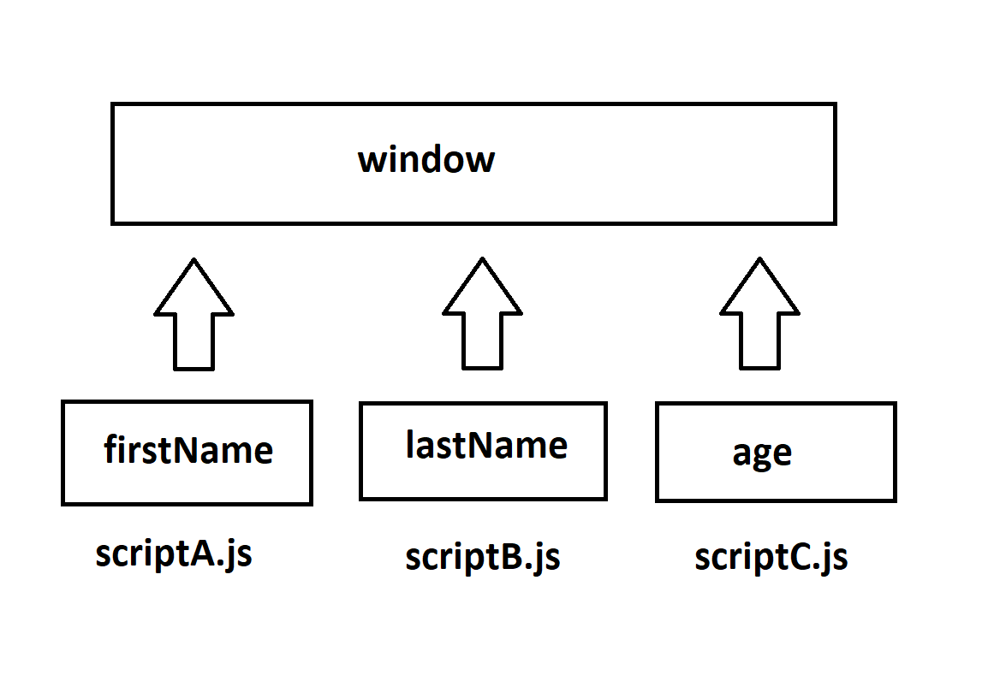

CMD(Terminal) üzerinde "node scriptA.js" şeklinde bir kod çalıştırdığınızda "window" objesi tanımlanamayacaktır. Çünkü "window" objesi sadece tarayıcılara özel bir objedir. NodeJS yani sunucu tarafında "window" objesini kullanamıyoruz.
Console penceresinde yazdırılan window objesine bakıldığında firstName ve lastName değişkenlerini görüntüleyebilirsiniz. Farklı script dosyaları olsa bile aynı sayfaya dahil edildiği sürece tek bir "window" objesini kullanacaktır.
Ayrıca scriptB.js dosyasında firstName değişkenini kullanabildiğimize dikkat edin. Aynı sayfada her ikiside uygun sırada eklendiği sürece ve global kapsamda tanımlandığı sürece içerikler kullanılabilmektedir. Ancak scriptA.js dosyasından scriptB.js üzerinde bulunan değişkenler kullanılamaz. Çünkü scriptB.js daha aşağıda dahil edilmiştir.
Aşağıdaki fonksiyonlara daha önce window objesinde tanımlandığı için ulaşabilmekteyiz.
NodeJS üzerinde window objesi ile benzer mantıkta "global" objesi bulunmaktadır. Ancak buradaki global objesi ortak değişken tanımlamalarını içermez. Yani scriptA.js üzerinde tanımlı olan bir değişkene scriptB.js üzerinde "global"objesi ile erişemeyiz.
Burada karşımıza "module"kavramı çıkıyor.
Global objesinde ortak olarak erişebileceğimiz özellikler elbette bulunmaktadır. Window objesindede bulunan bazı özellikler yine aşağıda ifade edildiği gibi "global" objesinde de bulunmaktadır.
console.log(global)kodunu scriptB.js dosyasına yazdıktan sonra CMD üzerinde node scriptB.js dediğiniz zaman objenin detaylarına erişebilirsiniz.
NOT: Tarayıcı üzerindeki konsol penceresinde global objesi tanınmayacaktır. Çünkü global objesi NodeJS tarafında tanınmaktadır.